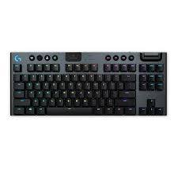

Trang Chủ
Tin Công nghệ
Liên hệ
About us
Đối tác

Bàn phím Logitech G Pro X
Nhà sản xuất: Logitech
Led: RGB
Bảo hành: 24 tháng
Tình trạng: Mới 100%
Giá bán: 2,790,000 VNĐ
Mô tả sản phẩm
PHYSICAL SPECIFICATIONS
Height: 34 mm (1.3 in)
Width: 361 mm (14.2 in)
Depth: 153 mm (6.02 in)
GX BLUE CLICKY SWITCHES
Actuation distance: 2.0 mm (0.1 in)
Actuation force: 50 g (1.8 oz)
Total travel distance: 3.7 mm (0.14 in)
OTHER FEATURES
Pro-inspired tenkeyless design
User-swappable mechanical switches
LIGHTSYNC RGB lighting
Onboard lighting profile
1.8 m (5.9 ft) detachable cable
12 programmable F-keys
1 ms report rate
REQUIREMENTS
USB port
Windows 7 or later, macOS 10.11 or later
Internet access for Logitech G HUB Software